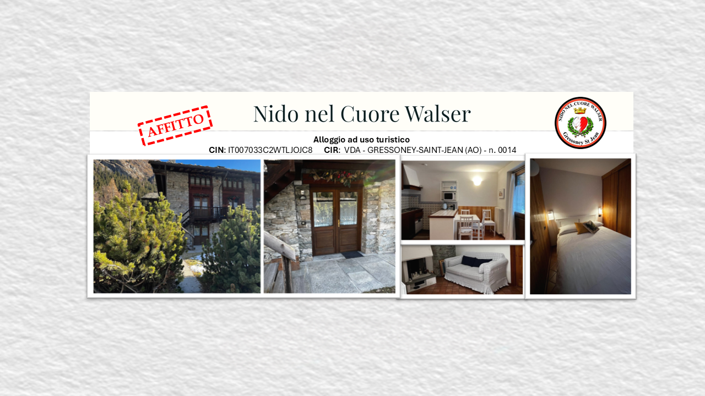
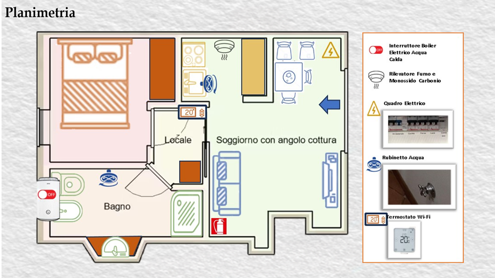
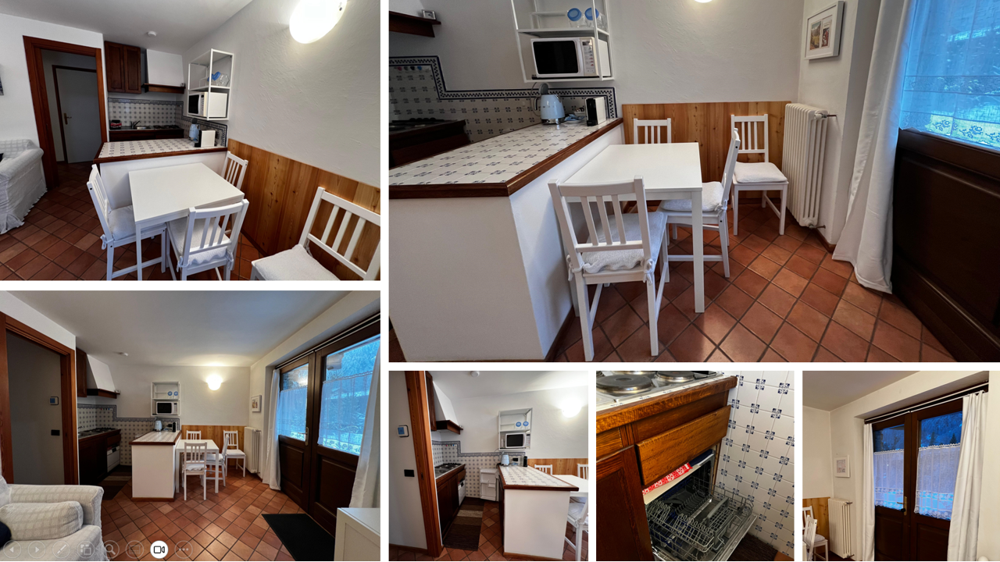
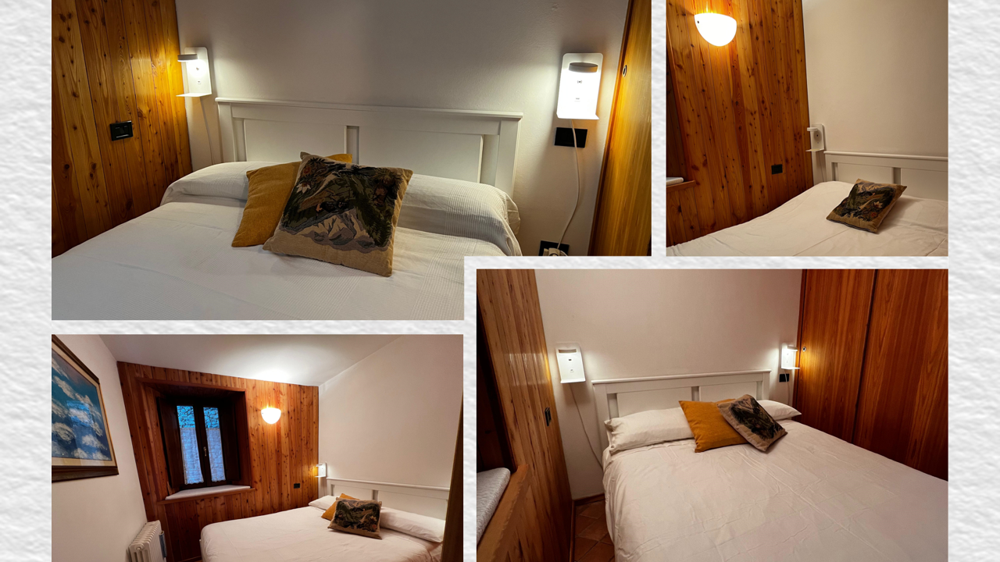
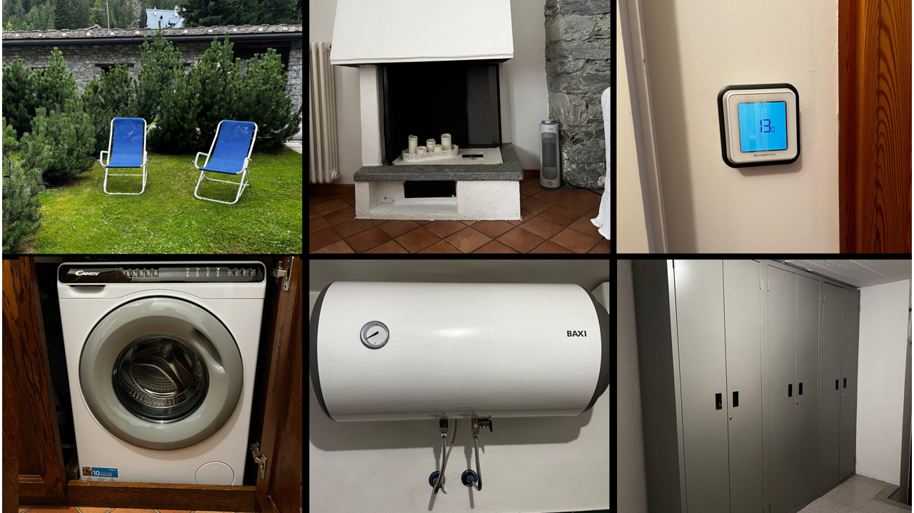
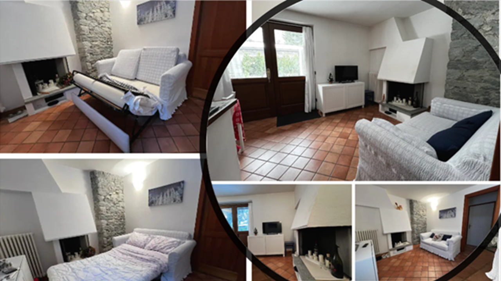
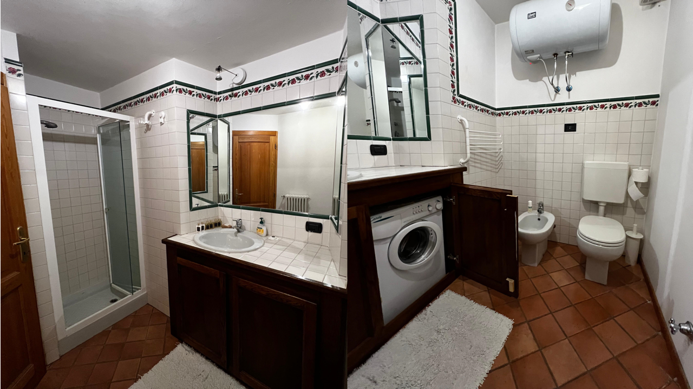

Appartamento nel centro storico di Gressoney-Saint-Jean. Tutti i servizi raggiungibili a piedi, riscaldamento programmabile a distanza per trovare l'alloggio caldo all'arrivo, skibus per il comprensorio Monterosa Ski a 100 metri.
Il Nido nel Cuore Walser è un appartamento di 28 mq al piano terra di un edificio recentemente ristrutturato, nel cuore del borgo di Gressoney-Saint-Jean. Dispone di camera con letto matrimoniale (140×200 cm) e di un divano letto da una piazza e mezza nel soggiorno.
La posizione consente di vivere il paese interamente a piedi: negozi, bar e ristoranti si trovano a pochi passi, la fermata dello skibus e la pista di sci di fondo distano 100 metri, il Lago Gover è raggiungibile con una breve passeggiata.
L'appartamento dispone di riscaldamento e acqua calda programmabili da remoto, apertura elettronica con codice numerico e connessione Wi-Fi gratuita: l'alloggio è caldo e pronto al momento dell'arrivo, in ogni stagione.

Utenze incluse
Giugno € 1.500
Luglio € 2.100
Agosto € 2.250
Un unico check-in, un'intera stagione in montagna senza pensieri.
Spese di riscaldamento ed energia escluse
Minimo 3 mesi: € 700 al mese
Formula semestrale: € 600 al mese
Soluzione ideale per lavoratori stagionali e per chi frequenta regolarmente la valle.
Settimana di Capodanno (quando disponibile, utenze incluse): € 1.500
Le altre disponibilità per brevi periodi sono pubblicate su Airbnb.
Ogni soggiorno è regolato da contratto di locazione. Prenotazione diretta tramite WhatsApp o dal calendario disponibilità, senza commissioni di intermediazione.

La zona giorno, luminosa e accogliente, riunisce soggiorno e cucina: divano letto da una piazza e mezza, tavolo con quattro sedie e angolo cottura completo di frigorifero, piano cottura elettrico, lavastoviglie a 6 coperti, forno a microonde, bollitore e macchina da caffè Nespresso.
La camera da letto offre un letto matrimoniale 140×200 cm, armadio e luci di lettura orientabili con prese USB. Il bagno è dotato di doccia, lavatrice e boiler da 80 litri.


Completano la dotazione: biancheria da letto e da bagno, coperte e cuscini, termostato Wi-Fi per il controllo preciso della temperatura, rilevatori di fumo e di monossido di carbonio. All'esterno, un'area giardino condominiale di fronte all'ingresso, con due sdraio disponibili su richiesta.
Il caminetto presente nel soggiorno è esclusivamente estetico e non può essere utilizzato.


L'appartamento si trova all'interno della Zona a Traffico Limitato: l'accesso per carico e scarico bagagli è autorizzabile per il periodo di soggiorno, previa comunicazione della proprietà alla polizia municipale. Il parcheggio gratuito si trova a 100 metri, prima del varco ZTL. Il check-in è autonomo, tramite tastierino numerico.
Check-in dopo le ore 15:00
Check-out entro le ore 11:00
L'appartamento si trova in Via Linty Waeg 4 – 11025 Gressoney-Saint-Jean (AO), a pochi passi dal Lago Gover e dal centro del paese.
In inverno il Lago Gover si trasforma in pattinaggio naturale, costeggiato dalla pista di sci di fondo (23 km) che passa a 100 metri dall'appartamento. Le navette skibus, con fermata a 100 metri e frequenza di 15 minuti, collegano in pochi minuti gli impianti del Weissmatten (2 km) e, da Gressoney-La-Trinité (6 km), il carosello Monterosa Ski: tre valli collegate, 180 km di piste di ogni livello, fino ai 3.275 metri del ghiacciaio dell'Indren.
D'estate la posizione dà il meglio di sé: la passeggiata verso il centro storico attraverso il prato del Lago Gover, l'itinerario della Regina Margherita fino a Castel Savoia, e l'intera gamma escursionistica del Monte Rosa, dalle camminate pianeggianti alle ascensioni alpinistiche fino alla Capanna Regina Margherita (4.554 m), il rifugio più alto d'Europa. Campi da tennis, parchi giochi e il Gressoney Golf Club si trovano nel raggio di 400 metri.
👉 Apri la posizione su Google Maps
Alloggio ad uso turistico regolarmente registrato.
CIN: IT007033C2WTLJOJC8 ·
CIR: VDA_LT_GRESSONEYSAINTJEAN_0014 ·
Attestato di Prestazione Energetica: APE0084258
Per ogni soggiorno viene stipulato regolare contratto di locazione; i dati degli ospiti sono comunicati alla Questura come previsto dalla normativa italiana. Telecamere di sorveglianza presenti all'esterno della proprietà.
Via Linty Waeg 4 – 11025 Gressoney-Saint-Jean (AO)
Telefono / WhatsApp: +39 335 832 1878
Email: info@nidonelcuorewalser.it
📆 Soggiorni brevi anche su Airbnb
🧾 COMPILA REGISTRO OSPITIPeriodi non disponibili nei prossimi mesi (aggiornato automaticamente):
Caricamento disponibilità…
Tutte le altre date sono libere: scrivici su WhatsApp per bloccare il tuo periodo.